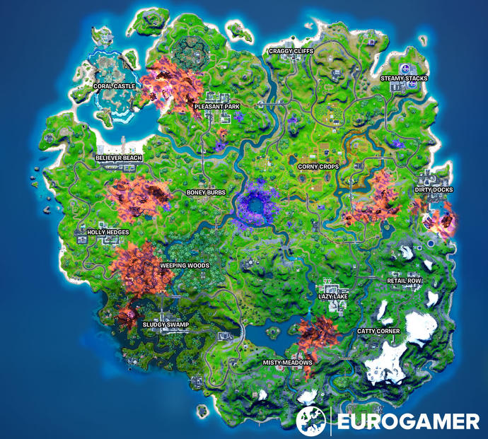

The new season map updates are looking very nice. The new Kevin the cube might be coming from the start of the game which will change all the map updates also all over the map. There will be crows sometimes the crows with colors that glow will give you very god loot.
Boney burds is a very sweaty landing spot where a lot of people land and a lot of action will happen there. If you land at pleseant park or other spots with names there might be some enemies landing there. Sometimes when you land on a spot with no name there might not be any enemies on the look out and you could get all the loot there for yourself.
If You're scared to jump into action you might want to jump into a save spot where no one lands. But if you would like to train and go on combat without fighting real players. well when you join the lobby press change game mode and change it to creative. If you look online you might be able to find some fun creative codes and maps to put your skills to the test.
click here to see more